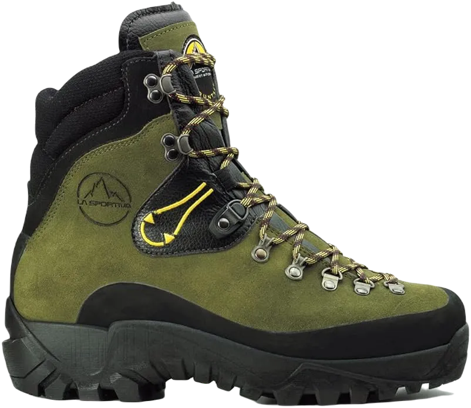

11 Best Lineman Boots for Pole Climbing
Linemen face unique challenges daily that set their work apart from other occupations. They operate both on the ground and at heights on poles that carry power lines, making climbing an essential aspect of their job. In this review, we provide a comprehensive overview of lineman work boots, highlighting the essential features of safety, comfort, and style.
These boots are specifically designed to meet the demands of the lineman's profession, ensuring they can navigate their environment safely while providing the necessary support for long hours of work. Whether it’s the rugged terrain on the ground or the challenges of climbing high poles, the right work boots play a crucial role in a lineman's effectiveness and well-being.
-
#1
Red wing Men’s Iron Ranger 6
Made in the USA, Red Wing work boots offer safety and protection from hazards, ensuring that your feet are well-guarded in various working conditions. These boots are crafted from high-quality leather and feature a Nitrile cork outsole for enhanced durability. Standing at six inches tall, they are designed for both functionality and comfort.
One of the signature features of these boots is the leather toe cap, which adds to their longevity. The shaft measures 6.5 inches from the arch, while the heel stands at one inch, and the shoe's platform measures 0.5 inches. Maintaining these boots is easy; simply use warm water and a bristle brush to remove dirt and debris.
The soft leather lining helps keep your feet cool and dry throughout the day. Additionally, the toe portion of the boots features a subtle hump, providing extra room for your feet and enhancing overall comfort during wear. These thoughtful design elements make Red Wing work boots a reliable choice for those in demanding work environments. -
#2
Chippewa Men’s 9″ Waterproof
.webp)
Stay secure in any environment with these work boots, designed for durability and protection. The upper part is crafted from 100% high-quality leather, ensuring long-lasting performance. Fully waterproof, these boots are stitched to prevent water from entering, providing reliable protection in wet conditions.
The boots feature a thick sole with large lugs that enhance traction on various surfaces. Additionally, a substantial heel with a noticeable curved drop makes climbing easier and safer. This design ensures that you can navigate challenging terrains with confidence and stability.
Inside, the boots are lined with protective materials that add an extra layer of safety, keeping your feet well-guarded during demanding tasks. With these features combined, these work boots offer the security and comfort you need for any job. -
#3
La Sportiva Men’s Makalu
These work boots are specifically designed for climbing, featuring a thick engineered sole that provides exceptional support. The unique tread pattern of the sole is ideal for ascending poles, with lugs that help maintain your stability, even in wet conditions. Additionally, the outsoles include a tall heel with an articulated round arch, enhancing overall performance during climbs. The uppers are constructed from high-quality leather, ensuring durability and protection.
Inside the boot, you’ll find ample padded cushioning that enhances comfort during extended wear. The shaft runs along the frame to the tongue, designed to prevent chafing as you climb. This thoughtful construction ensures a smooth fit that minimizes discomfort.
For added support, a steel shank is integrated into the sole, providing extra stability and strength. Together, these features make these work boots an excellent choice for anyone who needs reliable footwear for climbing tasks. -
#4
Georgia Boot Men’s Loggers G7313
.webp)
These boots combine exceptional security with a stylish design. Crafted from 100% high-quality leather, they feature a rich dark chocolate color along with distinctive design elements. Engineered for performance, these boots ensure reliable protection without compromise.
The soles are made from thick elastic rubber, featuring long treads that provide enhanced traction for a stable grip. The elevated heel aids in climbing, making these boots practical for various terrains. Additionally, the entire boot is waterproof, ensuring your feet stay dry in wet conditions.
With a shaft that extends nearly eight inches, these boots offer increased protection against physical harm to your legs. The longer shaft contributes to the overall security of the footwear, making them an excellent choice for those seeking both style and safety. -
#5
HOFFMAN BOOTS Men’s 10
These boots boast a smooth, stylish appearance, crafted from waterproof full-grain high-quality leather. They are reinforced with triple stitching from the toe to the foot, ensuring durability and longevity. Additionally, the boots feature thick Vibram soles, providing excellent traction and support.
Equipped with double steel shanks, these boots offer extra arch support, helping to protect your feet from the stresses of climbing while delivering the perfect amount of stability. This design ensures that your curves are well-supported, enhancing comfort during extended wear.
These boots are designed to grip any surface, keeping you secure whether you’re on the ground or high above the streets. It’s impressive that they incorporate two steel shanks, making them an outstanding choice for those in need of reliable and sturdy footwear. -
#6
Wesco Highliner 10″ Brown Lineman
.webp)
Wesco boots are specifically designed for the lineman profession, offering exceptional quality and durability. Their lace-to-toe pattern provides an ideal fit, keeping your feet and lower legs secure while climbing on rough and challenging surfaces. Made from full-grain leather, these boots are both tough and reliable, featuring a Vibram sole for superior traction. The removable tongue adds to their versatility, and the non-corrosive materials ensure longevity.
The boots feature a steel shank in the arch that offers additional support and comfort, making them suitable for long hours of wear. This design feature ensures that your feet remain comfortable and protected during extended climbing sessions.
With their combination of high-quality materials and thoughtful construction, Wesco boots help prevent exhaustion and discomfort, making them an excellent choice for linemen who face demanding conditions daily. -
#7
Danner Men’s Logger Work Boot
.webp)
Danner men's boots offer an affordable option that is suitable for climbing poles, although they may not be the best choice for walking or hiking. The rubber sole provides excellent traction for climbing, while the 10.5-inch shaft offers substantial support for your feet. These boots are particularly well-suited for cold weather conditions.
Lined with 400G Thinsulate Ultra, they provide exceptional warmth, making them ideal for chilly environments. One of the signature features of the Danner brand is their waterproof property, which ensures your feet stay dry in rainy or snowy conditions.
The upper part of the boot is crafted from Nubuck leather, enhancing both durability and style. This combination of materials and features makes Danner boots a reliable choice for those who need performance and protection while climbing in various weather conditions. -
#8
La Sportiva Karakorum Boot
For a lineman, climbing is an essential and unavoidable aspect of the job. Finding a boot specifically designed for outdoor work that offers excellent grip and reliable footing is crucial. These boots are crafted from a unique type of leather called Idro-perwanger, ensuring durability in various environments.
The La Sportiva Karakorum Boots feature an 8mm high-density nylon external casing that allows for flexibility and adaptability with each movement, providing a secure climbing experience. This design ensures that the boots can adjust to your every step, enhancing performance while climbing.
Additionally, the insole includes an air cushion, making these boots comfortable to wear during extended periods of climbing on poles or towers. This combination of high-quality materials and thoughtful construction makes the Karakorum Boots an excellent choice for linemen who require both comfort and support in their footwear. -
#9
Wesco Highliner Brown Lineman Boots
The Wesco Highliner is a traditional lineman boot that is handcrafted for optimal performance. Designed specifically for climbers, it features a steel shank for added support and a recessed metal heel breastplate that protects the boot from wear caused by climbing goads. The tall sides provide excellent protection for your legs against any potential hazards, while the padded insole, made from high-quality leather, enhances comfort during use.
The team at Wesco understands that when working with a saw in trees, the right support is crucial—not just for comfort but also for safety. The Highliner boots are crafted to minimize fatigue, discomfort, and wear, allowing you to focus entirely on your work without being distracted by sore feet.
These boots are the ideal choice for those who work in trees and on poles, as they are designed to provide the utmost protection and support. With the Wesco Highliner, you can trust that you're equipped with one of the best boots for demanding outdoor tasks. -
#10
Kenetrek Lineman Extreme Boots
Kenetrek is a leading brand known for its lineman boots, which incorporate essential safety and security features. These boots are designed for comfort and provide excellent ankle support, with their design influenced by orthopedic expertise and knowledge. The additional cushioned collar enhances comfort, while the full-lacing system contributes to the boot's overall strength and structure, ensuring both comfort and safety.
The upper portion of the boot is made from high-quality grain leather, measuring 2.8mm thick for durability. The K-Talon outsole is lightweight, making these boots easier to wear for extended periods. With a heavy-duty midsole, they provide solid support, while the steel toe meets safety standards, protecting your feet from electrical hazards. Additionally, a rubber cap on the toe guards against abrasion.
These boots are lined with a Windtex membrane, offering both waterproof and breathable properties. This feature ensures that your feet stay dry and comfortable in various conditions, making Kenetrek boots an excellent choice for linemen who require reliable performance and protection on the job. -
#10
Carolina 8-Inch Steel Toe 1821
.webp)
The upper part of the boot is crafted from high-quality leather, while the sole is made of rubber. Since climbing is a primary task for linemen, the outsole is designed to provide excellent support for this activity. Despite their sturdy appearance, these boots are surprisingly lightweight, making them easy to wear throughout the day.
Inside, the boots are lined with Cambrelle, a textured material that effectively wicks away moisture, ensuring your feet remain dry and comfortable over extended periods. Additionally, these boots feature removable DRYZ footbeds, which further enhance moisture management by drawing sweat away from your feet. The DRYZ technology works to keep your feet dry, even during long hours of wear. Carolina boots are constructed using Goodyear welt construction, ensuring durability and longevity.
The brown uppers are made from briar pitstop leather, providing exceptional wear resistance and outstanding durability. These electrical hazard (EH) boots are equipped with one-piece rubber lug outsoles that offer slip and oil resistance, ensuring balance and traction on various surfaces.